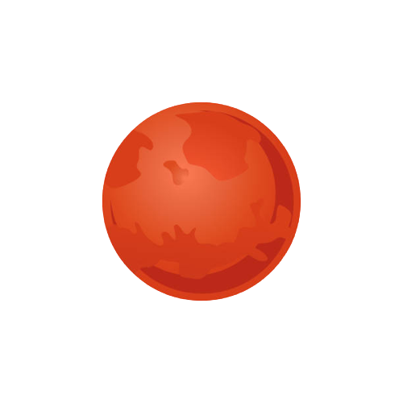

MARS
Mars is the fourth planet from the Sun and the second-smallest planet in the Solar System, only being larger than Mercury. In the English language, Mars is named for the Roman god of war. Mars is a terrestrial planet with a thin atmosphere (less than 1% that of Earth's), and has a crust primarily composed of elements similar to Earth's crust, as well as a core made of iron and nickel. Mars has surface features such as impact craters, valleys, dunes and polar ice caps. It has two small and irregularly shaped moons, Phobos and Deimos.
Source Wikipedia 
ROTATION TIME
1 DAY 37 MINUTES
REVOLUTION TIME
687 DAYS
RADIUS
3 389,7 KM
AVERAGE TEMP.